Supplied unofficial study solution, not an official GTU answer key. Answers and teaching diagrams have not been independently verified. Use Enlarge image for small details.આ આપેલો બિનસત્તાવાર અભ્યાસ ઉકેલ છે, સત્તાવાર GTU જવાબવહી નથી. જવાબો અને આકૃતિઓની સ્વતંત્ર ચકાસણી થઈ નથી. વાંચવા માટે ચિત્ર મોટું કરો.
Microcontroller & its Applications
Q1 · 8051 basics and memory
Q.1 (a) Define 1) Program Counter 2) Stack Pointer 3) DPTR (3 marks)Q.1 (a) Define 1) Program Counter 2) Stack Pointer 3) DPTR (3 marks)3 marks૦૩ ગુણ
Program Counter PC — 16 bit register that holds address of next instruction to fetch. After fetch, PC increments. Branch changes PC.
Stack Pointer SP — 8 bit register pointing to top of stack in internal RAM. PUSH increments SP then stores, POP reads then decrements. Default 07H after reset.
DPTR Data Pointer — 16 bit combined DPH DPL used to hold external data or code address for MOVC MOVX. Can be incremented and used as base for indexed addressing.
Program Counter PC — 16 બીટ રજીસ્ટર જે હવે પછી લાવવાની સૂચના નું એડ્રેસ રાખે. સૂચના લાવ્યા પછી PC આગળ વધે. જમ્પ થી PC બદલાય.
Stack Pointer SP — 8 બીટ રજીસ્ટર જે સ્ટેક ની ટોચ નું એડ્રેસ રાખે. PUSH પહેલા SP વધારી ને મૂકે, POP વાંચી ને SP ઘટાડે. રીસેટ પછી 07H પર હોય.
DPTR — DPH DPL મળી 16 બીટ, બહાર ના ડેટા કે કોડ નું એડ્રેસ રાખવા વપરાય. MOVC MOVX માં બેઝ તરીકે કામ આવે.
Q.1 (b) Compare microprocessor and microcontroller System. (4 marks)Q.1 (b) Compare microprocessor and microcontroller System. (4 marks)4 marks૦૪ ગુણ
| Point | Microprocessor System | Microcontroller System |
|---|---|---|
| Chip content | Only CPU, needs external memory and IO | CPU plus memory, IO, timer, UART on one chip |
| Use | General computer, fast data work | Embedded control like washing machine, robot |
| Cost power | Higher, more chips | Lower, single chip compact |
| Example | 8085, 8086, Pentium | 8051, AVR, PIC, ARM Cortex M |
| મુદ્દો | માઇક્રોપ્રોસેસર સિસ્ટમ | માઇક્રોકંટ્રોલર સિસ્ટમ |
|---|---|---|
| ચિપ માં શું | માત્ર CPU, બહાર મેમરી અને IO જોઈએ | CPU સાથે મેમરી, IO, ટાઇમર, UART એક ચિપ માં |
| ઉપયોગ | સામાન્ય કમ્પ્યુટર, ઝડપી કામ | એમ્બેડેડ કંટ્રોલ જેમ વોશિંગ મશીન, રોબોટ |
| ખર્ચ પાવર | વધુ, ઘણા ચિપ | ઓછો, એક ચિપ કોમ્પેક્ટ |
| ઉદાહરણ | 8085, 8086, Pentium | 8051, AVR, PIC, ARM Cortex M |
Q.1 (c) Explain Memory organization of 8051 microcontroller. (7 marks)Q.1 (c) Explain Memory organization of 8051 microcontroller. (7 marks)7 marks૦૭ ગુણ
8051 Harvard architecture separates program and data memory.
- Program memory 64KB: 0000H reset vector, 0003H INT0, 000BH Timer0 etc. 4KB on chip 0000H to 0FFFH. EA high uses internal, low forces external via PSEN. Read with MOVC.
- Data memory RAM 256 byte internal: 00H to 1FH 32 bytes register banks 0 to 3, 20H to 2FH bit addressable 16 bytes 128 bits, 30H to 7FH general, 80H to FFH SFR with DPTR PSW ACC B etc. External up to 64KB via MOVX, RD WR.
- Stack in internal RAM grows upward, SP points top. PC fetches code, DPTR points data.
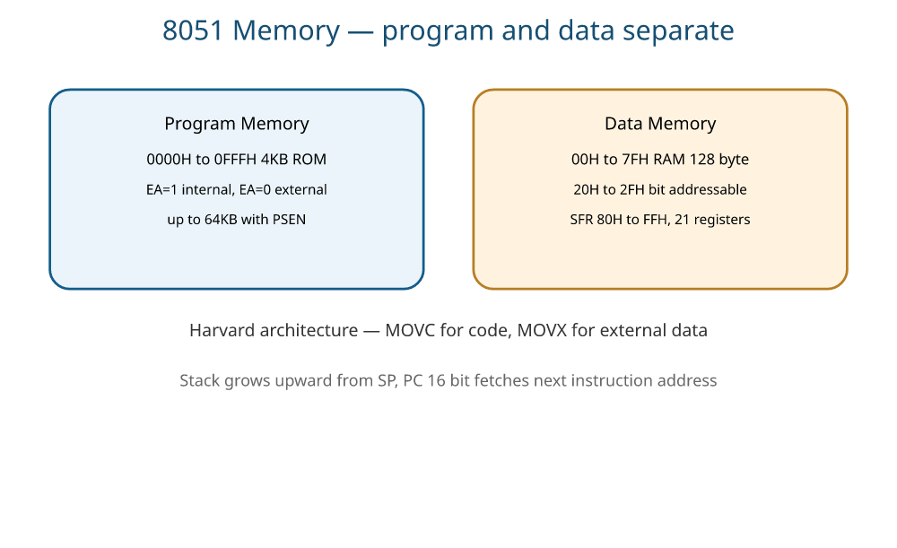
8051 માં પ્રોગ્રામ અને ડેટા મેમરી અલગ અલગ છે.
- પ્રોગ્રામ મેમરી 64KB: 0000H રીસેટ, 0003H INT0, 000BH Timer0 વગેરે. ચિપ માં 4KB 0000H થી 0FFFH. EA ઊંચો તો અંદર, નીચો તો બહાર PSEN થી. MOVC થી વંચાય.
- ડેટા RAM 256 બાઇટ: 00H થી 1FH 32 બાઇટ રજીસ્ટર બેંક, 20H થી 2FH બીટ એડ્રેસ 128 બીટ, 30H થી 7FH સામાન્ય, 80H થી FFH SFR જેમ DPTR PSW ACC B. બહાર 64KB MOVX RD WR થી.
- સ્ટેક અંદર RAM માં ઉપર તરફ વધે, SP ટોચ બતાવે. PC કોડ લાવે, DPTR ડેટા બતાવે.
Q.1 (c) OR Draw and explain Pin diagram of 8051 microcontroller and explain its function. (7 marks)Q.1 (c) OR Draw and explain Pin diagram of 8051 microcontroller and explain its function. (7 marks)7 marks૦૭ ગુણ
40 pin DIP: VCC 40, GND 20, XTAL1 19 XTAL2 18 for 12MHz crystal, RST 9 active high, EA 31, ALE 30, PSEN 29.
- Port 0 32 to 39: AD0 to AD7 multiplexed address data low byte, needs pull up, ALE latches address.
- Port 1 1 to 8: General IO.
- Port 2 21 to 28: High address A8 to A15 for external memory.
- Port 3 10 to 17: RXD TXD INT0 INT1 T0 T1 WR RD alternate functions.
ALE high latches address from Port 0, PSEN reads external program, EA high internal low external.
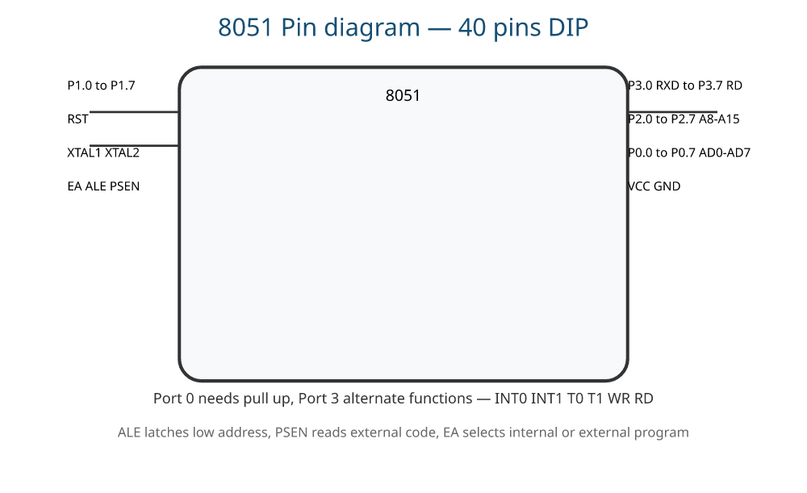
40 પીન DIP: VCC 40, GND 20, XTAL1 19 XTAL2 18 પર 12MHz ક્રિસ્ટલ, RST 9 ઊંચો, EA 31, ALE 30, PSEN 29.
- Port 0 32 થી 39: AD0 થી AD7 એડ્રેસ ડેટા ભેગા, પુલ અપ જોઈએ, ALE એડ્રેસ પકડે.
- Port 1 1 થી 8: સામાન્ય IO.
- Port 2 21 થી 28: બહાર મેમરી માટે ઊંચું એડ્રેસ A8 થી A15.
- Port 3 10 થી 17: RXD TXD INT0 INT1 T0 T1 WR RD બીજા કામ.
ALE ઊંચો થાય ત્યારે Port 0 નું એડ્રેસ પકડાય, PSEN બહાર પ્રોગ્રામ વાંચે, EA ઊંચો તો અંદર નીચો તો બહાર.
Q2 · Programming and language
Q.2 (a) Explain control statement of If-Else , White Loop and Do-while loop. (3 marks)Q.2 (a) Explain control statement of If-Else , White Loop and Do-while loop. (3 marks)3 marks૦૩ ગુણ
If Else: If condition true then one block else other. Example if temperature greater than 30 then fan on else off.
While Loop: Checks condition first, repeats while true. If false at start never runs.
Do While: Runs block once then checks, so at least one execution even if condition false.
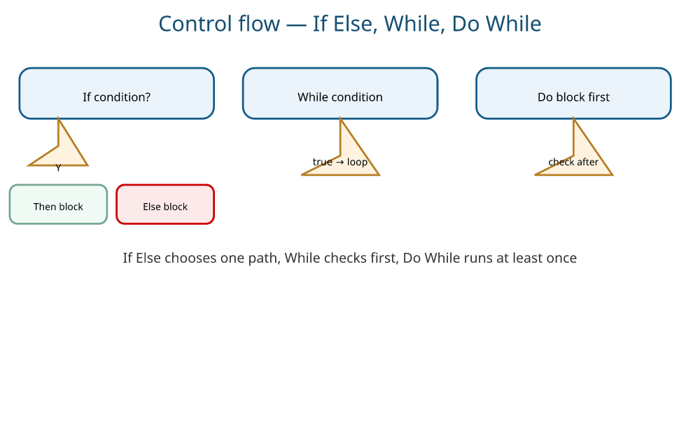
If Else: શરત સાચી તો એક કામ નહીં તો બીજું. જેમ તાપમાન 30 થી વધુ તો પંખો ચાલુ નહીં તો બંધ.
While Loop: પહેલા શરત તપાસે, સાચી હોય ત્યાં સુધી ફરે. શરૂઆત માં ખોટી હોય તો એકવાર પણ ન ચાલે.
Do While: પહેલા એકવાર કામ કરી પછી શરત તપાસે, તેથી ઓછામાં ઓછું એકવાર તો ચાલે જ.
Q.2 (b) Explain difference between assembly language and Embedded C. (4 marks)Q.2 (b) Explain difference between assembly language and Embedded C. (4 marks)4 marks૦૪ ગુણ
| Point | Assembly | Embedded C |
|---|---|---|
| Level | Low level mnemonic, near hardware | High level C with hardware access |
| Portability | Only for one controller family | More portable across controllers |
| Development | Slow, many lines, hard debug | Fast, fewer lines, easy maintain |
| Control vs size | Full control tiny code | Slight bigger but optimized by compiler |
| મુદ્દો | એસેમ્બલી | એમ્બેડેડ C |
|---|---|---|
| લેવલ | નીચું સ્તર, હાર્ડવેર નજીક | ઊંચું સ્તર, હાર્ડવેર પહોંચ સાથે |
| બીજા પર ચાલે | એક કંટ્રોલર માટે જ | બીજા કંટ્રોલર પર વધુ સરળ |
| બનાવવું | ધીમું, ઘણી લાઇન, ડિબગ અઘરું | ઝડપી, ઓછી લાઇન, જાળવણી સરળ |
| કંટ્રોલ વિરુદ્ધ કદ | પૂરો કંટ્રોલ નાનો કોડ | થોડો મોટો પણ કમ્પાઇલર સુધારે |
Q.2 (c) Explain different addressing modes of 8051 microcontroller with examples. (7 marks)Q.2 (c) Explain different addressing modes of 8051 microcontroller with examples. (7 marks)7 marks૦૭ ગુણ
- Immediate: Data in instruction, MOV A, #25H puts 25H into A.
- Direct: Address in instruction, MOV A, 30H copies 30H location to A.
- Register: MOV A, R2 copies R2, ADD A, R1.
- Register Indirect: Uses pointer, MOV A, @R0 takes from address in R0.
- Indexed: Base plus accumulator, MOVC A, @A+DPTR reads table at DPTR plus A offset.
- Implied: Operation on single register, RL A rotates, DA A adjusts BCD.
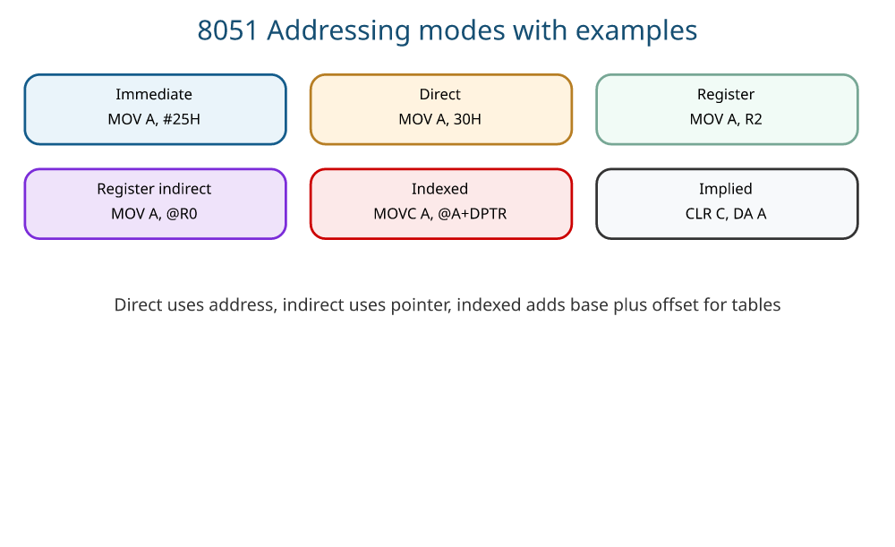
- Immediate: ડેટા સૂચના માં જ, MOV A, #25H એટલે A માં 25H મૂકો.
- Direct: એડ્રેસ સૂચના માં, MOV A, 30H એટલે 30H જગ્યા નું A માં કોપી.
- Register: MOV A, R2 એટલે R2 નું A માં, ADD A, R1.
- Register Indirect: પોઇન્ટર વાપરે, MOV A, @R0 એટલે R0 માં જે એડ્રેસ તે જગ્યા નું A માં.
- Indexed: બેઝ વત્તા A, MOVC A, @A+DPTR એટલે DPTR વત્તા A એટલે ટેબલ માંથી વાંચો.
- Implied: એક રજીસ્ટર પર, RL A ફેરવે, DA A BCD સુધારે.
Q.2 (a) OR Write an assembly program to add two 8 bit numbers and store result into accumulator. (3 marks)Q.2 (a) OR Write an assembly program to add two 8 bit numbers and store result into accumulator. (3 marks)3 marks૦૩ ગુણ
MOV A, #25H ; first number 25H to A MOV R0, #30H ; second number 30H to R0 ADD A, R0 ; A = A + R0, result in A, carry in CY ; If numbers in memory 30H and 31H: MOV A, 30H ADD A, 31H ; result in A
Add adds with carry flag, result stays in accumulator. For DAA after add if BCD.
MOV A, #25H ; પહેલો નંબર 25H A માં MOV R0, #30H ; બીજો નંબર 30H R0 માં ADD A, R0 ; A = A + R0, જવાબ A માં, કેરી CY માં ; જો નંબર મેમરી 30H અને 31H માં હોય: MOV A, 30H ADD A, 31H ; જવાબ A માં
ADD થી કેરી ફ્લેગ આવે, જવાબ એક્યુમ્યુલેટર માં રહે. BCD માટે પછી DAA કરો.
Q.2 (b) OR Explain structure of Embedded C program. (4 marks)Q.2 (b) OR Explain structure of Embedded C program. (4 marks)4 marks૦૪ ગુણ
Structure: Include reg51.h for SFR, define ports, main function with while 1 infinite loop for embedded repeat, init, loop body, functions, interrupt service routines with interrupt keyword.
#include <reg51.h>
void delay();
void main(){
while(1){
P1=0x55;
delay();
}
}Headers, defines, global, main and helper functions. No exit.
રચના: SFR માટે reg51.h, પોર્ટ નામ, main ફંક્શન માં while 1 નો સતત લૂપ, શરૂઆત સેટઅપ, લૂપ બોડી, ફંક્શન, interrupt સર્વિસ interrupt શબ્દ સાથે.
#include <reg51.h>
void delay();
void main(){
while(1){
P1=0x55;
delay();
}
}હેડર, define, ગ્લોબલ, main અને મદદગાર ફંક્શન. બહાર નીકળતું નથી.
Q.2 (c) OR Explain different operators in 8051 microcontrollers with examples (7 marks)Q.2 (c) OR Explain different operators in 8051 microcontrollers with examples (7 marks)7 marks૦૭ ગુણ
| Operator | Example |
|---|---|
| Arithmetic + - * / % | a = b + c; a = b % 10 |
| Logical && || ! | if(a>5 && b<10) |
| Bitwise & | ^ ~ << >> | P1 = P1 & 0x0F; P1 = P1 | 0x01 |
| Relational == != > < >= <= | if(count==10) |
| Assignment = += -= | a+=5 |
| SFR bit sbit P1^0 = LED | sbit LED = P1^0; LED=1 |
| ઓપરેટર | ઉદાહરણ |
|---|---|
| ગણતરી + - * / % | a = b + c; a = b % 10 |
| લોજિક && || ! | if(a>5 && b<10) |
| બીટ & | ^ ~ << >> | P1 = P1 & 0x0F; P1 = P1 | 0x01 |
| સરખામણી == != > < >= <= | if(count==10) |
| સોપણી = += -= | a+=5 |
| SFR બીટ sbit P1^0 = LED | sbit LED = P1^0; LED=1 |
Q3 · Timers, interrupts and delays
Q.3 (a) Explain TMOD register -Timer mode Control Register of 8051 microcontroller using Timer/Counter configuration. (3 marks)Q.3 (a) Explain TMOD register -Timer mode Control Register of 8051 microcontroller using Timer/Counter configuration. (3 marks)3 marks૦૩ ગુણ
TMOD 89H 8 bits, upper 4 for Timer1 lower 4 for Timer0. GATE, C slash T, M1, M0 for each timer.
GATE 0 timer runs with TR, 1 needs INT pin high too. C slash T 0 timer mode counting machine cycles, 1 counter mode counting external pulses on T0 T1 pins. M1 M0 select mode 0 to 3.
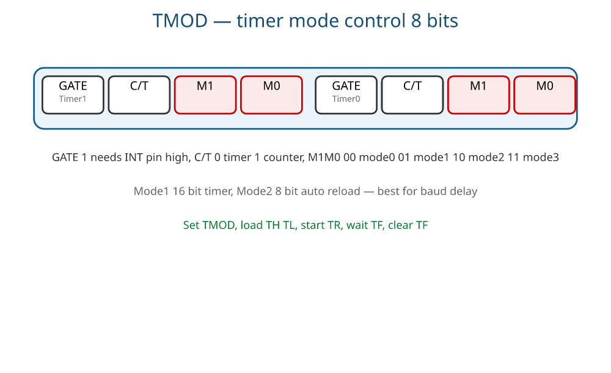
TMOD 89H 8 બીટ, ઉપર 4 Timer1 માટે નીચે 4 Timer0 માટે. દરેક માટે GATE, C/T, M1, M0.
GATE 0 તો TR થી ચાલે, 1 તો INT પીન ઊંચી હોય તો જ. C/T 0 ટાઇમર મશીન સાઇકલ ગણે, 1 કાઉન્ટર બહાર પલ્સ T0 T1 પર ગણે. M1 M0 થી મોડ 0 થી 3 નક્કી.
Q.3 (b) Explain steps to generate delay using timer. (4 marks)Q.3 (b) Explain steps to generate delay using timer. (4 marks)4 marks૦૪ ગુણ
- Choose timer 0 or 1 and mode, set TMOD.
- Calculate TH TL values for required delay, load them.
- Start timer TR0 or TR1 set.
- Wait until TF flag becomes 1.
- Stop timer, clear TF, repeat if longer delay needed.
Example 12MHz gives 1 microsecond per machine cycle.
- Timer 0 કે 1 અને મોડ પસંદ કરી TMOD સેટ કરો.
- જોઈતો વિલંબ માટે TH TL ગણી લોડ કરો.
- ટાઇમર ચાલુ કરો TR0 કે TR1 ઊંચો.
- TF ફ્લેગ 1 થાય ત્યાં સુધી રાહ જુઓ.
- ટાઇમર બંધ કરો, TF સાફ કરો, વધુ વિલંબ માટે ફરીથી.
12MHz હોય તો એક મશીન સાઇકલ 1 microsecond.
Q.3 (c) Explain modes of timer 0 and timer 1. (7 marks)Q.3 (c) Explain modes of timer 0 and timer 1. (7 marks)7 marks૦૭ ગુણ
Mode 0: 13 bit old mode, TL low 5 bits TH 8 bits.
Mode 1: 16 bit, TH TL as 16 bit counter, most used for general delay, max 65536 counts.
Mode 2: 8 bit auto reload, TL counts TH holds reload value, good for baud rate.
Mode 3: Split Timer 0 into two 8 bit timers TH0 TL0, Timer1 holds while Timer0 in mode3. Timer1 cannot do mode3 else holds.
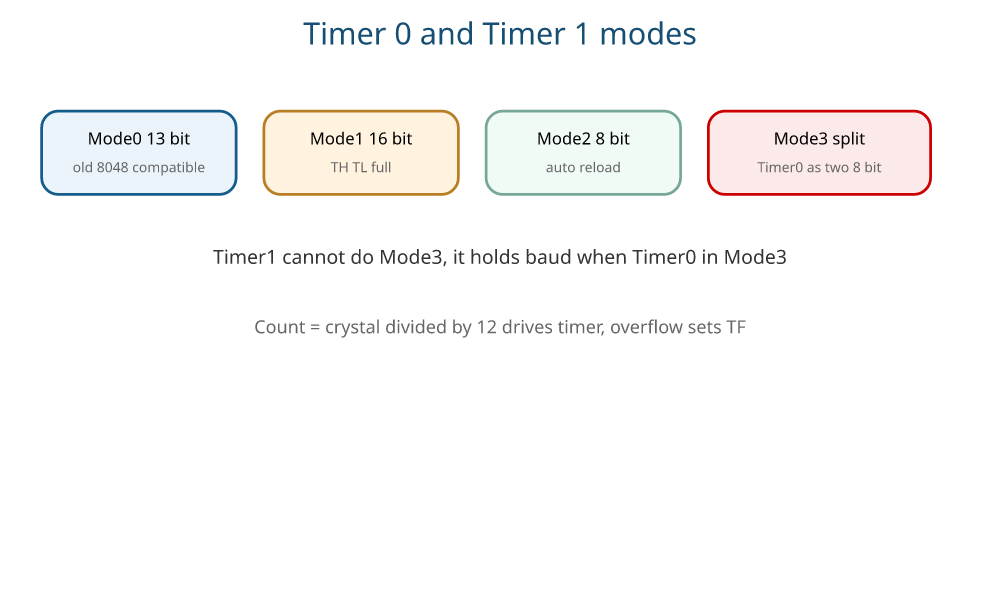
Mode 0: 13 બીટ જૂનો, TL ના નીચે 5 બીટ TH 8 બીટ.
Mode 1: 16 બીટ, TH TL 16 બીટ કાઉન્ટર, સામાન્ય વિલંબ માટે વધુ વપરાય, મહત્તમ 65536.
Mode 2: 8 બીટ ઓટો રિલોડ, TL ગણે TH રિલોડ રાખે, baud rate માટે સારું.
Mode 3: Timer 0 ને બે 8 બીટ TH0 TL0 માં વહેંચે, Timer1 રોકાય જ્યારે Timer0 Mode3 માં. Timer1 Mode3 ન કરી શકે.
Q.3 (a) OR Compare TMOD and TCON register. (3 marks)Q.3 (a) OR Compare TMOD and TCON register. (3 marks)3 marks૦૩ ગુણ
| TMOD 89H | TCON 88H |
|---|---|
| Mode control, set before start | Control and flags during run |
| Holds GATE C slash T M1 M0 for both timers | Holds TF1 TR1 TF0 TR0 plus IE1 IT1 IE0 IT0 |
| Cannot be bit addressed, byte write only | Bit addressable 88H to 8FH |
| TMOD 89H | TCON 88H |
|---|---|
| મોડ કંટ્રોલ, ચાલુ કરતા પહેલા સેટ | ચાલતી વખતે કંટ્રોલ અને ફ્લેગ |
| GATE C/T M1 M0 બંને ટાઇમર માટે | TF1 TR1 TF0 TR0 વત્તા IE1 IT1 IE0 IT0 |
| બીટ એડ્રેસ નહીં, બાઇટ લખાય | બીટ એડ્રેસ 88H થી 8FH |
Q.3 (b) OR Explain different types of Interrupts in 8051 microcontrollers. (4 marks)Q.3 (b) OR Explain different types of Interrupts in 8051 microcontrollers. (4 marks)4 marks૦૪ ગુણ
External INT0 INT1, Timer TF0 TF1, Serial TI RI. Total five, each can be enabled via IE, priority via IP, vector to fixed address. INT can be level or edge via IT bit. On interrupt PC pushed to stack, jumps to vector, reti returns.
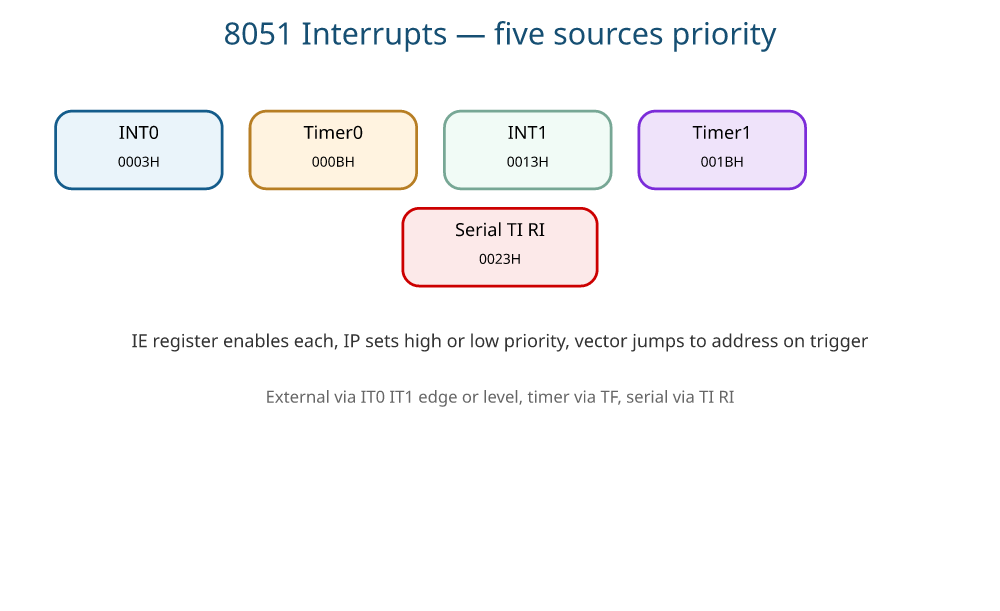
બહાર INT0 INT1, ટાઇમર TF0 TF1, સીરીયલ TI RI. કુલ પાંચ, દરેક IE થી ચાલુ બંધ, IP થી પ્રાયોરિટી, વેક્ટર પર જાય. INT લેવલ કે એજ IT બીટ થી. ઇન્ટરપ્ટ આવે PC સ્ટેક માં જાય, વેક્ટર પર કૂદે, reti થી પાછું.
Q.3 (c) OR Generate 1ms Delay (12MHz Crystal) using Embedded C Language. (7 marks)Q.3 (c) OR Generate 1ms Delay (12MHz Crystal) using Embedded C Language. (7 marks)7 marks૦૭ ગુણ
12MHz crystal gives machine cycle 1 microsecond. For 1ms need 1000 counts.
#include <reg51.h>
void delay_ms(){
TMOD=0x10; // Timer1 mode1
TH1=0xFC; TL1=0x18;
TR1=1;
while(TF1==0);
TR1=0; TF1=0;
}
void main(){ while(1){ P1=0x55; delay_ms(); } }For longer delay loop this or use mode2 auto reload 250 microsecond four times.
12MHz ક્રિસ્ટલ થી મશીન સાઇકલ 1 microsecond. 1ms માટે 1000 ગણતરી જોઈએ.
#include <reg51.h>
void delay_ms(){
TMOD=0x10; // Timer1 mode1
TH1=0xFC; TL1=0x18;
TR1=1;
while(TF1==0);
TR1=0; TF1=0;
}
void main(){ while(1){ P1=0x55; delay_ms(); } }વધુ વિલંબ માટે આને લૂપ માં ફેરવો કે Mode2 માં 250 microsecond ચાર વાર.
Q4 · Interfacing and displays
Q.4 (a) Explain applications of 8051 Interfacing. (3 marks)Q.4 (a) Explain applications of 8051 Interfacing. (3 marks)3 marks૦૩ ગુણ
Interfacing connects 8051 ports to real world: LEDs, relays for home automation, keypad for entry, LCD and 7 segment for display, sensors LM35 LDR, motors for robot, ADC for analog, GSM GPS for IoT, DAC for sound.
ઇન્ટરફેસિંગ એટલે 8051 પોર્ટ ને બહાર ની દુનિયા સાથે જોડવું: LED, રિલે થી ઘર ઓટોમેશન, કીપેડ થી એન્ટ્રી, LCD અને 7 સેગમેન્ટ થી ડિસ્પ્લે, LM35 LDR જેવા સેન્સર, મોટર થી રોબોટ, એનાલોગ માટે ADC, IoT માટે GSM GPS, સાઉન્ડ માટે DAC.
Q.4 (b) Explain Keypad interfacing for Data Entry. (4 marks)Q.4 (b) Explain Keypad interfacing for Data Entry. (4 marks)4 marks૦૪ ગુણ
4x4 keypad 16 keys as rows and columns matrix. Rows driven from port, columns read. Scan one row low at a time, check columns for low due to pressed key, debounce 20ms, decode via lookup. 8 pins of port enough.
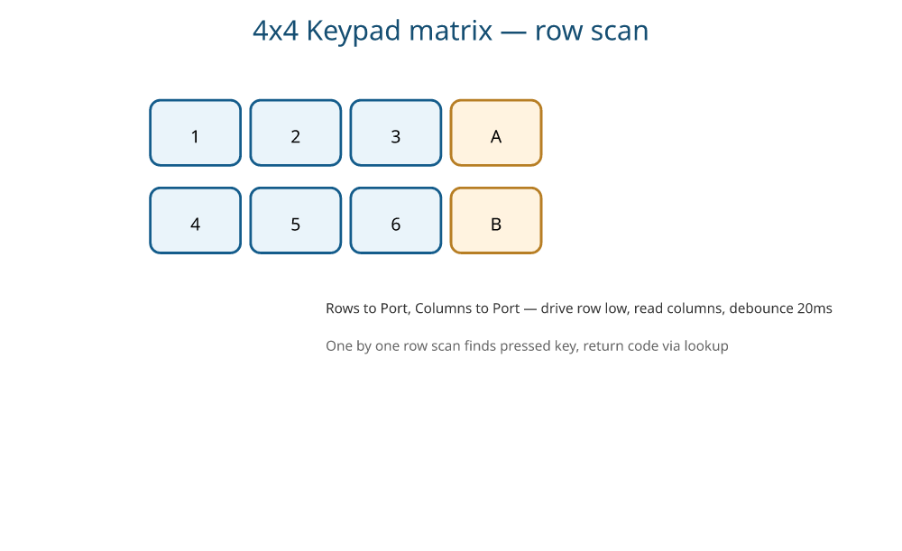
4x4 કીપેડ 16 કી પંક્તિ અને કૉલમ માં. પંક્તિ પોર્ટ થી ચલાવો, કૉલમ વાંચો. એક પછી એક પંક્તિ નીચી કરી કૉલમ માં નીચું આવે ત્યાં કી દબાયેલી સમજો, 20ms ડિબાઉન્સ, ટેબલ થી કોડ. પોર્ટ ના 8 પીન પૂરતા.
Q.4 (c) Explain the interfacing of a 7-segment display with 8051. Differentiate between common anode and common cathode display. (7 marks)Q.4 (c) Explain the interfacing of a 7-segment display with 8051. Differentiate between common anode and common cathode display. (7 marks)7 marks૦૭ ગુણ
Interfacing: Port pins via 330 ohm to a b c d e f g dp. Common pin to VCC or GND via driver for brightness. Code table 0x3F for 0 etc. sent to port lights segments.
| Common Anode CA | Common Cathode CC |
|---|---|
| All anodes joint to VCC | All cathodes joint to GND |
| 0 on segment lights, active low | 1 on segment lights, active high |
| Need current sink via transistor | Source via driver |
Multiplex four digits via PNP/NPN switching fast to avoid flicker.
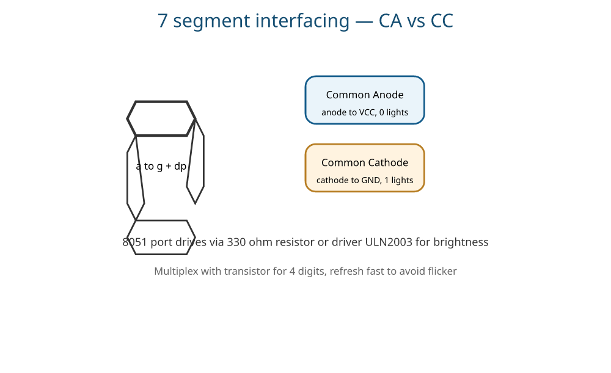
જોડાણ: પોર્ટ પીન 330 ઓહ્મ થી a b c d e f g dp પર. કોમન પીન VCC કે GND પર ડ્રાઇવર થી તેજ માટે. 0 માટે 0x3F જેવો કોડ પોર્ટ પર મોકલતા સેગમેન્ટ ચમકે.
| Common Anode CA | Common Cathode CC |
|---|---|
| બધા એનોડ VCC સાથે | બધા કેથોડ GND સાથે |
| સેગમેન્ટ પર 0 તો ચાલુ, એક્ટિવ લો | સેગમેન્ટ પર 1 તો ચાલુ, એક્ટિવ હાઇ |
| ટ્રાન્ઝિસ્ટર થી કરંટ સિંક | ડ્રાઇવર થી સોર્સ |
ચાર અંક મલ્ટિપ્લેક્સ PNP NPN થી ઝડપથી બદલી ફ્લિકર ટાળો.
Q.4 (a) OR Explain the function of RS,RW,EN pins of a 16X2 LCD. (3 marks)Q.4 (a) OR Explain the function of RS,RW,EN pins of a 16X2 LCD. (3 marks)3 marks૦૩ ગુણ
RS Register Select: 0 selects command register, 1 selects data.
RW Read Write: 0 write to LCD, 1 read from LCD usually tied low for write only.
EN Enable: High to low pulse latches RS RW and data. Needs 450ns pulse.
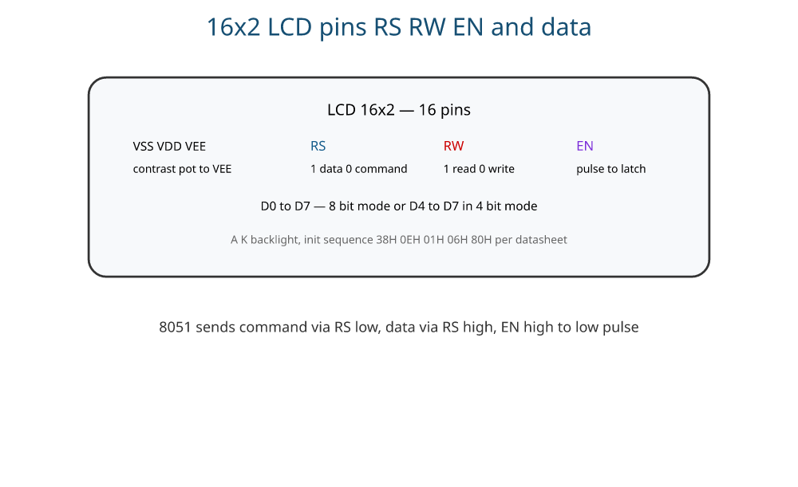
RS: 0 તો કમાન્ડ રજીસ્ટર, 1 તો ડેટા રજીસ્ટર.
RW: 0 તો LCD માં લખવું, 1 તો વાંચવું સામાન્ય રીતે નીચે જ રાખીએ.
EN: ઊંચો થી નીચો પલ્સ RS RW ડેટા પકડે. 450ns પલ્સ જોઈએ.
Q.4 (b) OR Write an 8051 program in C to display 0-9 on a 7-segment display. (4 marks)Q.4 (b) OR Write an 8051 program in C to display 0-9 on a 7-segment display. (4 marks)4 marks૦૪ ગુણ
#include <reg51.h>
unsigned char seg[]={0x3F,0x06,0x5B,0x4F,0x66,0x6D,0x7D,0x07,0x7F,0x6F}; // CC
void delay(){ int i; for(i=0;i<30000;i++); }
void main(){
while(1){
for(int k=0;k<10;k++){
P0=seg[k]; // P0 to CA via driver invert if CA
delay();
}
}
}Array holds 0 to 9 codes, for loop sends each to port with delay.
#include <reg51.h>
unsigned char seg[]={0x3F,0x06,0x5B,0x4F,0x66,0x6D,0x7D,0x07,0x7F,0x6F}; // CC
void delay(){ int i; for(i=0;i<30000;i++); }
void main(){
while(1){
for(int k=0;k<10;k++){
P0=seg[k]; // P0 to CA via driver invert if CA
delay();
}
}
}એરે માં 0 થી 9 કોડ, for લૂપ દરેક પોર્ટ પર વિલંબ સાથે મોકલે.
Q.4 (c) OR Explain DC Motor Interfacing with 8051. (7 marks)Q.4 (c) OR Explain DC Motor Interfacing with 8051. (7 marks)7 marks૦૭ ગુણ
8051 port cannot drive motor current, so L293D or transistor H bridge介. P1.0 P1.1 control IN1 IN2, enable for PWM speed. IN1 high IN2 low forward, opposite reverse, both low stop. Flyback diodes protect. Separate motor supply VCC2.
For direction plus speed use PWM via timer at enable pin, relay for simple on off.
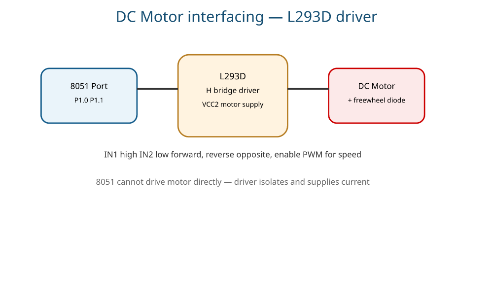
8051 પોર્ટ મોટર કરંટ ન આપી શકે તેથી L293D કે ટ્રાન્ઝિસ્ટર H બ્રિજ. P1.0 P1.1 IN1 IN2 કંટ્રોલ, enable પર PWM થી ઝડપ. IN1 ઊંચો IN2 નીચો આગળ, ઊલટું પાછળ, બંને નીચા બંધ. ડાયોડ રક્ષણ. મોટર સપ્લાય VCC2 અલગ.
દિશા વત્તા ઝડપ માટે ટાઇમર થી PWM enable પર, સાદું ચાલુ બંધ માટે રિલે.
Q5 · ADC, GSM and systems
Q.5 (a) Explain need for Analog to Digital Conversion (ADC) in 8051. Why is an external ADC required? (3 marks)Q.5 (a) Explain need for Analog to Digital Conversion (ADC) in 8051. Why is an external ADC required? (3 marks)3 marks૦૩ ગુણ
8051 works digital only, but sensors like LM35 give analog voltage. ADC converts analog to digital so controller can read. Classic 8051 has no internal ADC, so external ADC0804 or ADC0808 needed via port.
8051 માત્ર ડિજિટલ સમજે, પણ LM35 જેવા સેન્સર એનાલોગ વોલ્ટેજ આપે. ADC એનાલોગ ને ડિજિટલ માં ફેરવે તેથી કંટ્રોલર વાંચી શકે. જૂના 8051 માં અંદર ADC નથી તેથી બહાર ADC0804 કે ADC0808 પોર્ટ થી જોડવો પડે.
Q.5 (b) Explain role of MAX232 in BMS and its applications of BMS system. (4 marks)Q.5 (b) Explain role of MAX232 in BMS and its applications of BMS system. (4 marks)4 marks૦૪ ગુણ
MAX232: Converts TTL 0 to 5V from 8051 to RS232 plus minus 10V for PC GSM. Contains charge pump capacitors. Needed between microcontroller UART and PC modem or BMS master.
BMS Building Management System: Central control for lighting, HVAC, fire, access, lifts, energy metering. Uses bus and GSM Ethernet to monitor and log. Saves energy and improves safety.
MAX232: 8051 ના TTL 0 થી 5V ને PC GSM ના RS232 plus minus 10V માં ફેરવે. અંદર ચાર્જ પંપ કેપેસિટર હોય. માઇક્રોકંટ્રોલર UART અને PC મોડેમ કે BMS માસ્ટર વચ્ચે જરૂરી.
BMS બિલ્ડિંગ મેનેજમેન્ટ: લાઇટ, HVAC, ફાયર, એક્સેસ, લિફ્ટ, એનર્જી મિટર નું મધ્યસ્થ નિયંત્રણ. બસ અને GSM Ethernet થી દેખરેખ અને લોગ. ઊર્જા બચે અને સલામતી વધે.
Q.5 (c) Draw and explain Microcontroller and GSM based security system with relay. (7 marks)Q.5 (c) Draw and explain Microcontroller and GSM based security system with relay. (7 marks)7 marks૦૭ ગુણ
Sensors PIR door magnetic give trigger to 8051. 8051 via UART AT commands to GSM SIM800 send SMS call to owner and activate relay driving siren lock via transistor. Relay isolates high voltage. MAX232 if RS232 levels.
Flow: Sensor high → controller reads → sends AT+CMGF AT+CMGS with phone number and message → GSM network delivers → relay on for timed period.
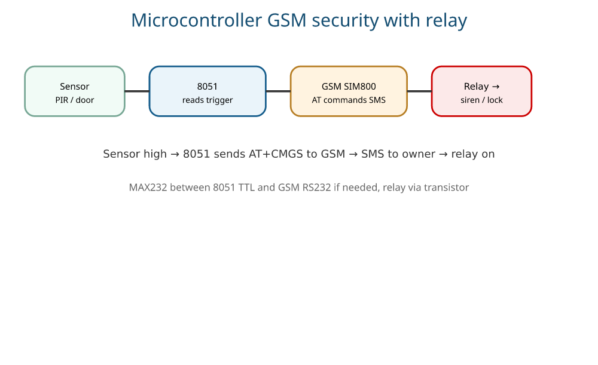
PIR દરવાજા ના સેન્સર 8051 ને ટ્રિગર આપે. 8051 UART થી GSM SIM800 ને AT કમાન્ડ મોકલી SMS કોલ કરે અને ટ્રાન્ઝિસ્ટર થી રિલે ચલાવી સાયરન લોક કરે. રિલે હાઇ વોલ્ટેજ અલગ રાખે. RS232 લેવલ હોય તો MAX232.
પ્રવાહ: સેન્સર ઊંચો → કંટ્રોલર વાંચે → AT+CMGF AT+CMGS ફોન નંબર અને મેસેજ સાથે મોકલે → GSM નેટવર્ક પહોંચાડે → રિલે સમયસર ચાલુ.
Q.5 (a) OR State the applications of temperature control system. (3 marks)Q.5 (a) OR State the applications of temperature control system. (3 marks)3 marks૦૩ ગુણ
Incubator for hospitals, cold storage, oven for bakery, car AC, data centre cooling, lab water bath, industrial furnace.
હોસ્પિટલ ઇન્ક્યુબેટર, કોલ્ડ સ્ટોરેજ, બેકરી ઓવન, કાર AC, ડેટા સેન્ટર કુલિંગ, લેબ વોટર બાથ, ઔદ્યોગિક ભઠ્ઠી.
Q.5 (b) OR Draw and explain the block diagram a temperature control system using 8051 and LM35. (4 marks)Q.5 (b) OR Draw and explain the block diagram a temperature control system using 8051 and LM35. (4 marks)4 marks૦૪ ગુણ
LM35 gives 10mV per degree linear. To ADC0804 then to 8051 port. 8051 compares with setpoint, if high then relay on to start fan or heater via driver, else off. Display on LCD 7 segment. ADC clock from 8051.
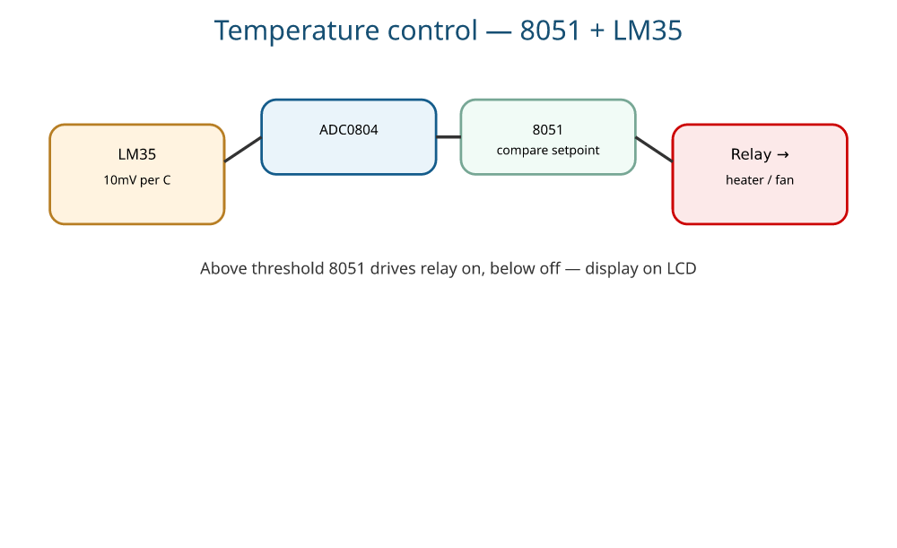
LM35 દર ડિગ્રી એ 10mV લીનીયર આપે. ADC0804 થઈ 8051 પોર્ટ પર. 8051 સેટપોઇન્ટ સાથે સરખાવે, વધુ હોય તો રિલે ચાલુ કરી પંખો કે હીટર ડ્રાઇવર થી ચલાવે, નહીં તો બંધ. LCD 7 સેગમેન્ટ પર બતાવે. ADC ક્લોક 8051 થી.
Q.5 (c) OR Draw and explain the working of solar tracking system using LDR, stepper motor and 7 segment display. (7 marks)Q.5 (c) OR Draw and explain the working of solar tracking system using LDR, stepper motor and 7 segment display. (7 marks)7 marks૦૭ ગુણ
Two LDRs east west with divider give voltage per light. To ADC or comparator to 8051. 8051 compares, if east brighter then steps stepper east via ULN2003 sequence, else west. Panel on stepper shaft follows sun. 7 segment shows angle or LDR difference. Night returns to east.
Improves energy 20 to 35 percent over fixed.
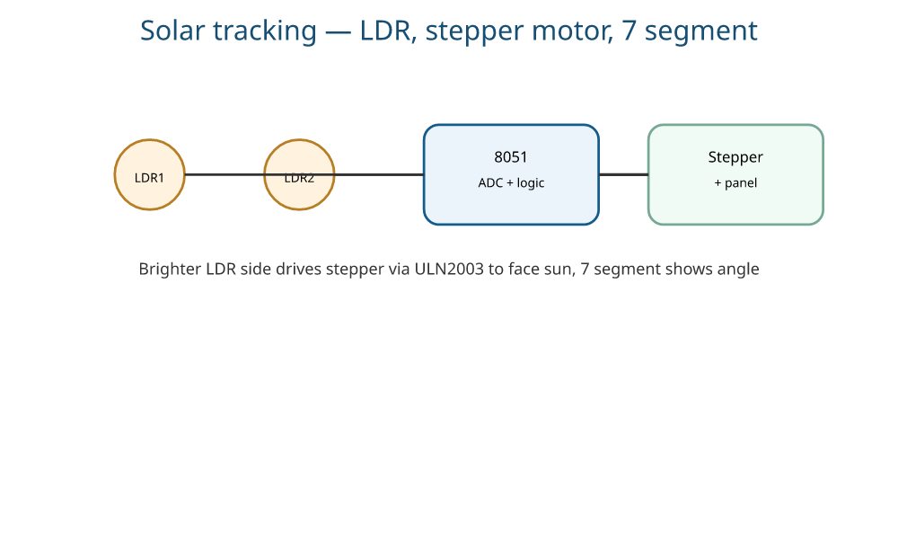
બે LDR પૂર્વ પશ્ચિમ ડિવાઇડર થી પ્રકાશ પ્રમાણે વોલ્ટેજ આપે. ADC કે કમ્પેરેટર થી 8051 માં. 8051 સરખાવે, પૂર્વ વધુ તેજ તો સ્ટેપર પૂર્વ તરફ ULN2003 સિક્વન્સ થી ફેરવે નહીં તો પશ્ચિમ. પેનલ સ્ટેપર શાફ્ટ પર સૂરજ પાછળ ફરે. 7 સેગમેન્ટ એંગલ કે LDR તફાવત બતાવે. રાત્રે પૂર્વ પાછું.
ફિક્સ કરતા 20 થી 35 ટકા વધુ ઊર્જા મળે.